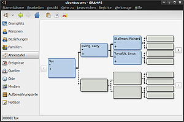

GRAMPS
Dieser Artikel wurde für die folgenden Ubuntu-Versionen getestet:
Ubuntu 16.04 Xenial Xerus
Ubuntu 14.04 Trusty Tahr
Zum Verständnis dieses Artikels sind folgende Seiten hilfreich:
GRAMPS  (Genealogical Research and Analysis Management Programming System) ist ein Genealogie-Programm, welches den GEDCOM Standard unterstützt. Familienstammbäume mit den Basisdaten über Personen, Familien, Orte und Quellen können einfach und schnell erfasst und exportiert werden.
(Genealogical Research and Analysis Management Programming System) ist ein Genealogie-Programm, welches den GEDCOM Standard unterstützt. Familienstammbäume mit den Basisdaten über Personen, Familien, Orte und Quellen können einfach und schnell erfasst und exportiert werden.
Installation¶
Folgendes Paket muss installiert [1] [2] werden:
gramps (universe)
 mit apturl
mit apturl
Paketliste zum Kopieren:
sudo apt-get install gramps
sudo aptitude install gramps
Nach erfolgreicher Installation kann das Programm entweder als gramps in einem Terminal bzw. Anwendungsstarter (
Alt +
F2 ) oder über den Menüpunkt "Anwendungen -> Büro -> Gramps Genealogiesystem" gestartet werden [3].

Es gibt eine Reihe optionaler Pakete, die den Funktionsumfang des Programmes erweitern.
Eine gefällige Darstellung von Stammbäumen ermöglicht das Paket
graphviz (main)
mit apturl
Paketliste zum Kopieren:
sudo apt-get install graphviz
sudo aptitude install graphviz
Unter Trusty weist das Programm beim Erststart darauf hin, dass kein exiv2- und kein OsmGpsMap-Modul installiert ist. Die beiden folgenden Pakete bereinigen das:
gir1.2-gexiv2-0.10 (zur Anzeige von Metadaten in Bildern)
gir1.2-osmgpsmap-1.0 (für geographische Ansichten)
mit apturl
Paketliste zum Kopieren:
sudo apt-get install gir1.2-gexiv2-0.10 gir1.2-osmgpsmap-1.0
sudo aptitude install gir1.2-gexiv2-0.10 gir1.2-osmgpsmap-1.0
Einstellungen¶
Über "Bearbeiten -> Einstellungen" kann der Einstellungsdialog des Programms aufgerufen werden. Hier können Speicherpfade und Basisdaten angepaßt werden.
Bedienung¶
Das Hauptfenster des Programms enthält unter anderem die folgenden Elemente:
| Hauptfenster | |
| Kurzbeschreibung | |
| Menüleiste | Zugriff auf alle Funktionen von GRAMPS. |
| Werkzeugleiste | Zugriff auf Basisfunktionen. |
| Anzeigebereich | Die Ansicht variiert je nach gewählter Option. |
Die Bedienung des Programms ist sehr umfangreich und gut im Wiki  des Projektes dokumentiert.
des Projektes dokumentiert.
Die Liste der möglichen Ansichten links deuten die Möglichkeiten an, die das Programm bereithält:
Gramplets nützliche Hilfsprogramme und Zusatzansichten
Personen Liste der Personennamen
Beziehungen wichtige Arbeitsansicht, wer wie mit wem
Familien Liste der Familiennamen
Ahnentafel Standarddarstellung des Baumes in die Vergangenheit verzweigend
Ereignisse Liste der registrierten Ereignisse
Quellen
Orte
Medien
Aufbewahrungsorte
Notizen
Tastenkürzel¶
| GRAMPS | |
| Taste(n) | Funktion |
| Strg + O | Stammbäume verwalten. |
| Strg + I | Importfunktion |
| Strg + E | Exportfunktion |
| Strg + Q | Programm beenden. |
Tipp¶
Personen hinzufügen geht am Besten in der Ansicht "Beziehungen"
Die Ansicht "Gramplets" enthält einige nützliche Ergänzungen wie z.B "Zu erledigen Liste" oder "Altersstatistik"

- Erstellt mit Inyoka
-
 2004 – 2017 ubuntuusers.de • Einige Rechte vorbehalten
2004 – 2017 ubuntuusers.de • Einige Rechte vorbehalten
Lizenz • Kontakt • Datenschutz • Impressum • Serverstatus -
Serverhousing gespendet von